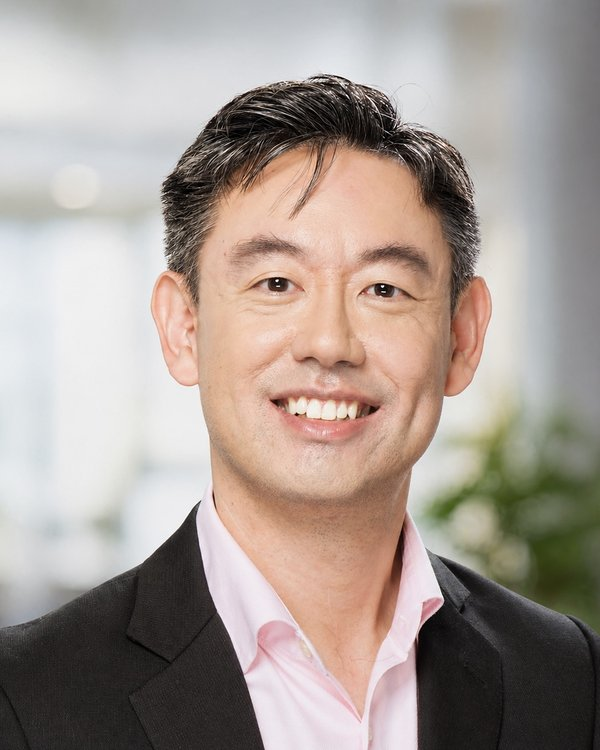

Nearly 25 years leading HR and organisational change across Asia Pacific — at Johnson & Johnson Vision, TE Connectivity, and Microsoft. I founded DeepClarity to work on the problem I kept seeing from the inside.

I spent nearly 25 years leading HR and organisational transformation from the inside — across Johnson & Johnson Vision, TE Connectivity, and Microsoft in Asia Pacific. In that time, I sat in the room when strategies were set, when AI initiatives were launched, when leadership teams were convinced they were aligned. And I watched the same pattern repeat.
Not the absence of talent. Not the wrong technology. The absence of clarity.
"Most AI transformations and leadership initiatives fail not from lack of technology or talent — but from lack of clarity. Unclear purpose. Misaligned teams. Avoided conversations."
I founded DeepClarity because I wanted to work on the real problem — the human system that determines whether transformation actually sticks. I bring a business-first lens, an OD and systems foundation, and a direct style. The work is always the same: get clear first, then move.
I partner with senior business leaders, CHROs, and regional HR leaders across Asia Pacific — on AI transformation, leadership effectiveness, and talent strategy. My measure of success is simple: what's still working six months after I've gone.
I hold a Master's in Organization Development from Pepperdine University and bring an applied coaching practice to every engagement. I operate from the belief that the practitioner's own presence — self as instrument, attending to what is actually alive in the system — is the primary tool. Not a fixed framework imposed on the client, but deep attention to what is actually there.
Working with senior business leaders, CHROs, and regional HR leaders across Asia Pacific on AI transformation readiness, senior leadership team effectiveness, and talent strategy. Building capability the client owns — not dependency on DeepClarity.
Led HR for J&J's Vision business across Asia Pacific — a multi-billion dollar global business — partnering functions spanning commercial, R&D, regulatory, and medical affairs across approximately 1,600 employees. Navigated complex multi-stakeholder environments through periods of significant commercial and organisational change. Experienced firsthand what it takes — and what gets in the way — when the stakes are real.
Led HR for the Automotive business unit across Asia Pacific — a multi-billion dollar large-scale manufacturing and technology business with approximately 6,000 employees spanning sales, marketing, supply chain, and manufacturing — reporting directly to the President for Automotive APAC. That reporting line, outside the conventional HR structure and accountable directly to the business, sharpened a business-first perspective that has stayed central to the work ever since.
Began in APAC talent leadership — designing and running talent systems at scale across one of the world's most complex technology organisations. Progressed into broader HR leadership during a period of significant business transformation. The structured approach to talent strategy that DeepClarity brings to clients was built and refined here.
Grounded in the traditions of Peter Block, Ed Schein, and Chris Worley — stewardship, process consultation, and sustainable organisational effectiveness. Not a framework imposed on every situation, but a way of reading what is actually there.
Graduate-trained in organisational development (Pepperdine University, MSOD) with an applied coaching practice. The practitioner's presence — self as instrument, attending to what is actually alive in the system — is the primary tool. Not a script, not a fixed model, but deep attention to what is actually there.
Intellectual rigour, pragmatism, and the willingness to say difficult things plainly in service of a larger purpose. Credibility earned through precision, not vocabulary. If the work isn't connecting to commercial outcomes, something has gone wrong.
If you're navigating growth, transformation, or AI adoption in Asia Pacific — I welcome a direct conversation.
Get in touch